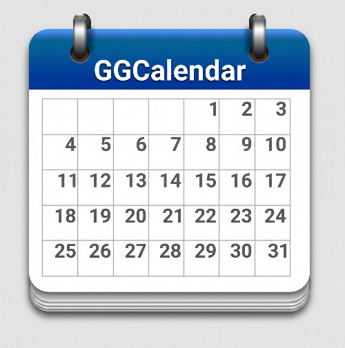

Viste giorno, settimana, mese
Passa in un clic dalla panoramica mensile al dettaglio della giornata, con il giorno corrente sempre evidenziato.
GGCalendar è un calendario per Windows 11 pensato per organizzare impegni, scadenze e promemoria in modo chiaro e veloce. Un'interfaccia familiare, ispirata ai migliori calendari online, direttamente sul tuo desktop.

Funzioni
Se hai mai usato un calendario online, ti sentirai subito a casa: stessa logica, stessa chiarezza, in un'app leggera pensata per Windows 11.
Passa in un clic dalla panoramica mensile al dettaglio della giornata, con il giorno corrente sempre evidenziato.
Crea un evento con titolo, data, orario, luogo e note. Modificalo o spostalo quando i piani cambiano.
Ricevi una notifica prima dell'evento, così non perdi più scadenze, lezioni e appuntamenti. Per i promemoria importanti c'è la sveglia, che suona finché non la spegni. Un pulsante accanto alla ricerca elenca le sveglie in attesa: puoi spegnerle, annullarle o aprire l'evento.
Ripeti un impegno ogni giorno, settimana, mese o anno senza doverlo reinserire ogni volta.
Cerca una parola in titolo, descrizione, luogo e invitati, su uno o più calendari, anche con date e parole da escludere.
Collega uno o più account Google, se vuoi: calendari, eventi e promemoria restano allineati in entrambe le direzioni. Anche le sveglie: quelle impostate qui suonano pure su GGCalendar Mobile per Android, e viceversa. Puoi anche creare, eliminare e modificare (nome e colore) i tuoi calendari Google direttamente dall'app, e scollegare un account in qualsiasi momento con un clic destro sul suo nome.
Nessun account obbligatorio e nessun server dell'autore: i dati restano sul tuo computer o, se colleghi Google, viaggiano solo tra il PC e il tuo account Google. Dettagli nell'informativa sulla privacy.
Informazioni
I dati essenziali sulla prima versione di GGCalendar.
1.0.1
Windows 11
Giansalvo Gusinu
Disponibile per Windows 11. GGCalendar è software libero, distribuito con licenza GNU GPL v3 o successive (codice sorgente): leggi i termini di servizio e l'informativa sulla privacy.
Download per Windows 11Contatti
Scrivi direttamente all'autore: ogni feedback aiuta a migliorare le prossime versioni.
Scrivi a Giansalvo Gusinu